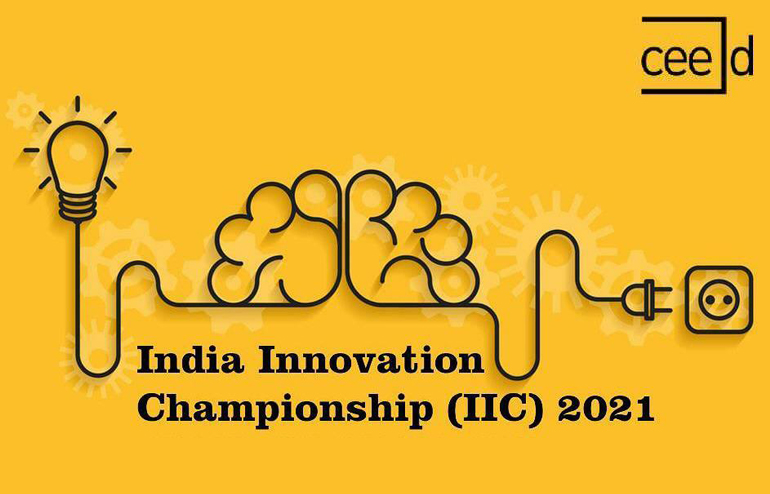
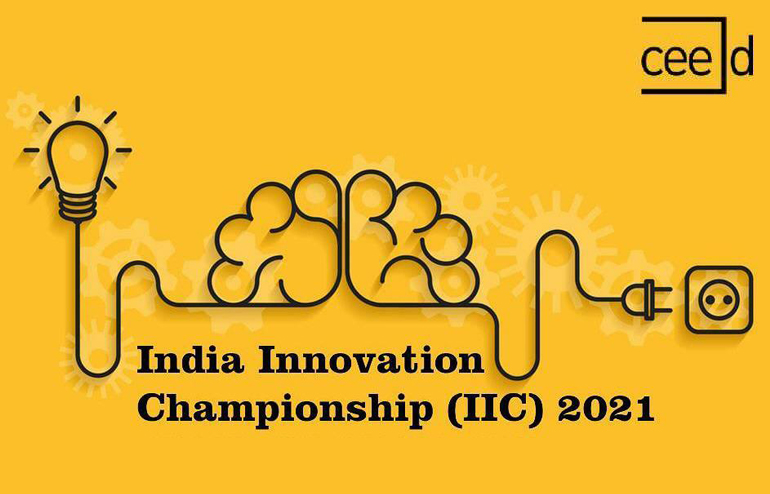
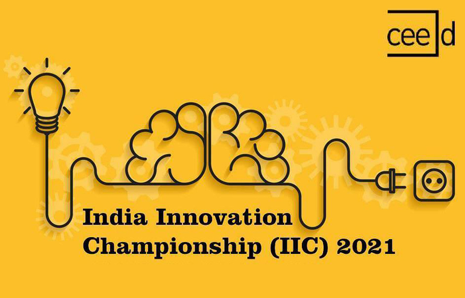

Featured articles
 



December 18, 2021 - 4 minute read
With the COVID-19 pandemic, established systems like education, health, manufacturing, etc. have been severely impacted. According to the World Economic Forum, more than 1.2 billion children in 186 countries have been affected by school closures due to the pandemic. This impelled educational institutions to adopt online technologies at a break-neck speed. This change has provided a clear picture of existing inequalities and a clearer picture of what steps we need to take in the future, chief among them addressing the education of students whose learning has been hampered due to school closures. It is evident that we cannot return to the world as it existed before the pandemic. One of the strongest messages is that our common humanity necessitates global solidarity.
The heart of any educational process is the human relationship between a student and a teacher. These hybrid systems rely on technology, which is out of reach of many developing countries and more so, there is no infrastructure in place like the internet and electricity. As per a report by the UN on the digital divide in Africa, only 11% of learners in sub-Saharan Africa have a household computer and only 18% have household internet, as compared to the 50% of learners globally who have computers in their homes and 57% who have access to the internet. This is a major impediment for children living in poverty worldwide, who often depend on the physical setting of their schools to provide educational materials, guidance and sometimes, the only decent meal of the day.
Education-related start-ups have already begun to take benefit of the platform afforded by the rapid spread of mobile/smartphones. During the lockout, a hybrid learning system had to be designed to keep the teaching process going. It’s a teaching method in which some students attend class in person while others participate virtually from their homes. Educators use video conferencing hardware and software to teach both remote and in-person students at the same time.
Featured articles
